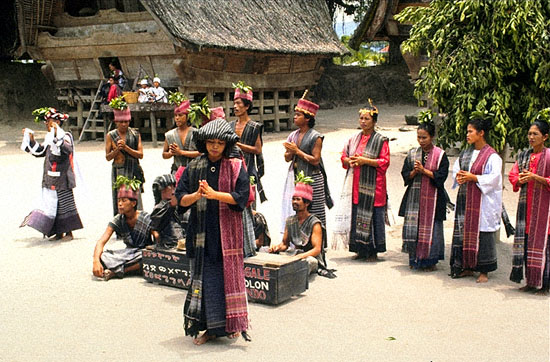
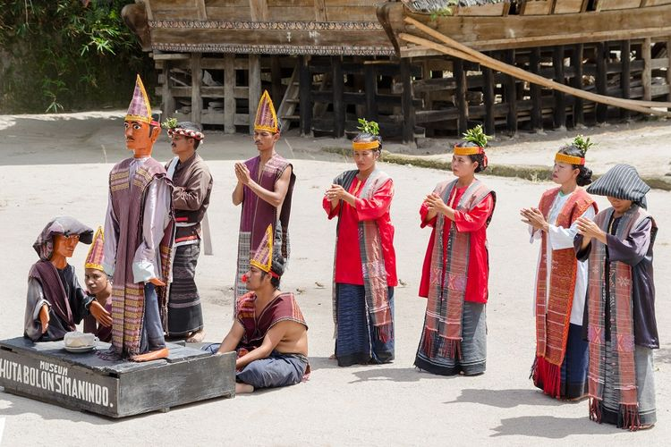

 Suku Batak adalah salah satu suku besar yang ada di Indonesia. Suku Batak merupakan etnis yang berasal dari Sumatera Utara. Suku Batak terbagi bagi menjadi 6 sub-suku atau puak, yaitu Batak Toba, Batak Karo, Batak Simalungun, Batak Mandailing, Batak Pakpak, dan Batak Angkalo. Tahukah kalian setiap sub-suku batak memiliki dialek yang berbeda-beda namun hampir mirip, selain dialek bahasa yang berbeda setiap sub-suku juga memiliki kain songket yang berbeda-beda dengan corak warna yang berbeda-beda, begitu pun dengan kepercayaan atau agama yang dianut oleh orang batak berbeda-beda.
Kepercayaan atau agama orang suku batak pada umumnya adalah Keristen dan Islam, Suku batak mempunyai sistem kepercayaan dan religi terhadap Mula Jadi Nabolon. Masyarakat percaya Mula Jadi Nabolon. memiliki kekuasaan di atas langit dan pencaran kekuasaanny terwujud dalam Debata Natolu. Dalam kepercayaan suku Batak Toba, mereka meyakini terdapat 3 konsep jiwa dan ruh, yaitu:
jiwa atau roh seseorang yang merupakan kekuatan, tondi memberi nyawa kepada manusia. Tondi didapat sejak seseorang di dalam kandungan. Bila tondi meninggalkan badan seseorang, maka orang tersebut akan sakit atau meninggal, maka diadakan upacara mangalap (menjemput) tondi dari sombaon yang menawannya
jiwa atau roh kekuatan yang dimiliki seseorang. Semua orang memiliki tondi, tetapi tidak semua orang memiliki sahala. Sahala sama dengan sumanta, tuah atau kesaktian yang dimiliki para raja atau hula-hula.
Merupakan tondi orang yang telah meninggal, dan bertingkah laku sama dengan manusia, namun hanya muncul pada waktu malam.
walau demikian terdapat wilayah Sumatera Utara yang sebagian besar masyarakatnya menganut agama islam. Agama Islam itu sendiri disebarkan oleh para pedagang dari Minangkabau dengan melakukan perkawinan, selain itu masyarakat batak semakin banyak memeluk Agama Islam pada abad ke-19, yaitu pada peristiwa Perang Paderi yang mengislamkan masyarakat batak Mandailing dan Angkola secara besar-besaran. Kerajaan Aceh di utara, juga berperan dalam mengislamkan sebagian masyarakat Karo dan Pakpak. Sementara Simalungun banyak terkena pengaruh Islam dari masyarakat Melayu di pesisir Sumatera Timur.